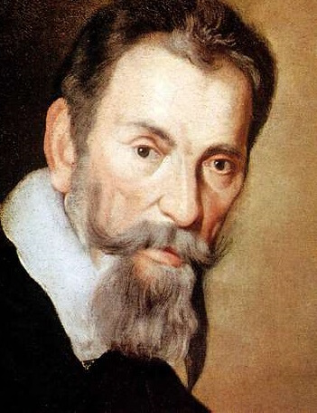

 (Cremona, actual Italia, 1567 - Venecia, 1643) Compositor italiano. La figura que mejor ejemplifica la transición en el ámbito de la música entre la estética renacentista y la nueva expresividad barroca es la del cremonés Monteverdi. Educado en la tradición polifónica de Tomás Luis de Victoria, Orlando di Lasso y Palestrina, este músico supo hacer realidad la nueva y revolucionaria concepción del arte musical surgida de las teorías de la Camerata Fiorentina, que, entre otras cosas, supuso el nacimiento de la ópera.
Hijo de un médico de Cremona, Claudio Monteverdi se dio a conocer en fecha bastante temprana como compositor: publicó su primera colección de motetes en Venecia cuando sólo contaba quince años. Su maestría en el arte de tañer la viola le valió entrar en 1592 al servicio del duque Vincenzo Gonzaga de Mantua, a la sazón una de las cortes más prósperas de Italia.
Tras seguir a su señor en la campaña contra los turcos en Austria y Hungría y visitar Flandes (viajes éstos que le permitieron conocer otras escuelas musicales ajenas a la italiana), fue nombrado maestro de capilla de Mantua en 1601, con la función de proveer toda la música necesaria para los actos laicos y religiosos de la corte.
Una fecha clave en su evolución fue la del año 1607, en que recibió el encargo de componer una ópera. El reto era importante para un compositor educado en la tradición polifónica que hasta aquel momento había destacado en la composición de madrigales a varias voces, pues se trataba de crear una obra según el patrón que Jacopo Peri y Giulio Caccini, ambos músicos de la Camerata Fiorentina, habían establecido en su Euridice, una obra en un nuevo estilo, el llamado stile rappresentativo, caracterizado por el empleo de una sola voz que declama sobre un somero fondo instrumental. Una pieza dramático-musical, en fin, en que a cada personaje le correspondía una sola voz.
Esto, que hoy puede parecer pueril, en la época suponía un cambio de mentalidad radical: el abandono de la polifonía, del entramado armónico de distintas voces, por el cultivo de una única línea melódica, la monodia acompañada. El resultado fue La favola d'Orfeo, composición con la que Monteverdi no sólo superó el modelo de Peri y Caccini, sino que sentó las bases de la ópera tal como hoy la conocemos.
El éxito fue inmediato y motivó nuevos encargos, como L'Arianna, ópera escrita para los esponsales de Francisco de Gonzaga y Margarita de Saboya, de la que sólo subsiste un estremecedor Lamento. La muerte en 1612 de su protector, Vincenzo Gonzaga, motivó que el músico trocara Mantua por Venecia, donde permaneció hasta su muerte. Maestro de capilla de la catedral de San Marcos, compuso la magistral colección Madrigali guerrieri et amorosi. Las composiciones religiosas ocupan un lugar destacado en su quehacer durante esta larga etapa. También las óperas: en 1637, cuando el compositor contaba ya setenta años, abrieron sus puertas en Venecia los primeros teatros públicos de ópera y, lógicamente, se solicitaron a Monteverdi nuevas obras.
Desde que el músico escribiera Orfeo, el espectáculo había evolucionado considerablemente: de la riqueza vocal e instrumental de las primeras óperas se había pasado a un tipo de obras en las que la orquesta quedaba reducida a un pequeño conjunto de cuerdas y bajo continuo, sin coro; además, la distinción entre recitativo y arioso se había acentuado. A pesar de estas diferencias, Monteverdi supo adaptarse a las nuevas circunstancias con éxito: las dos óperas que han llegado hasta nosotros, Il ritorno d'Ulisse in patria y L'incoronazione di Poppea, son dos obras maestras del teatro lírico, de incontestable modernidad.
{kind=link}